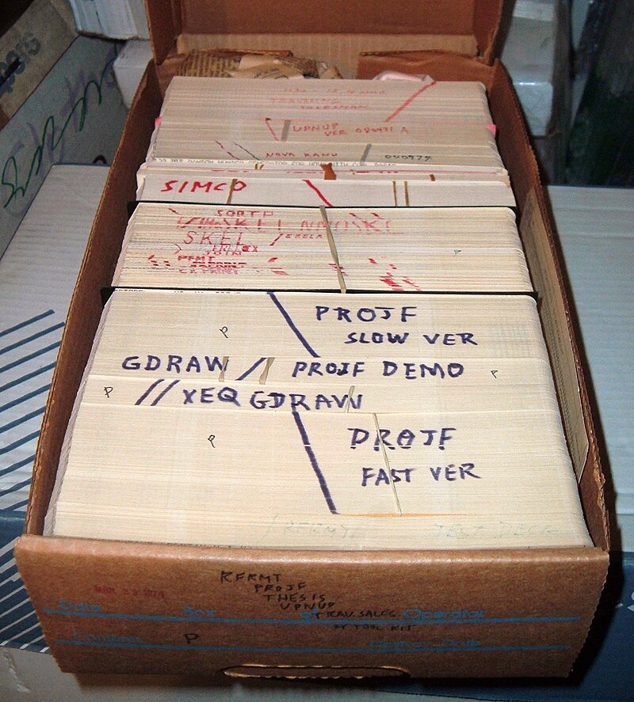
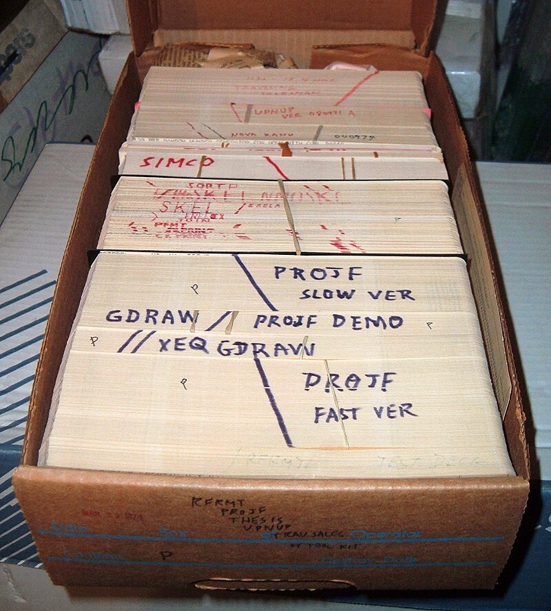

Computer programming or coding is the composition of sequences of instructions, called programs, that computers can follow to perform tasks.[1][2] It involves designing and implementing algorithms, step-by-step specifications of procedures, by writing code in one or more programming languages. Programmers typically use high-level programming languages that are more easily intelligible to humans than machine code, which is directly executed by the central processing unit. Proficient programming usually requires expertise in several different subjects, including knowledge of the application domain, details of programming languages and generic code libraries, specialized algorithms, and formal logic. Auxiliary tasks accompanying and related to programming include analyzing requirements, testing, debugging (investigating and fixing problems), implementation of build systems, and management of derived artifacts, such as programs' machine code. While these are sometimes considered programming, often the term software development is used for this larger overall process – with the terms programming, implementation, and coding reserved for the writing and editing of code per se. Sometimes software development is known as software engineering, especially when it employs formal methods or follows an engineering design process.
 


High-level languages made the process of developing a program simpler and more understandable, and less bound to the underlying hardware. The first compiler related tool, the A-0 System, was developed in 1952[11] by Grace Hopper, who also coined the term 'compiler'.[12][13] FORTRAN, the first widely used high-level language to have a functional implementation, came out in 1957,[14] and many other languages were soon developed—in particular, COBOL aimed at commercial data processing, and Lisp for computer research. These compiled languages allow the programmer to write programs in terms that are syntactically richer, and more capable of abstracting the code, making it easy to target varying machine instruction sets via compilation declarations and heuristics. Compilers harnessed the power of computers to make programming easier[14] by allowing programmers to specify calculations by entering a formula using infix notation.
When we give instructions to a computer through code, we are, in our own way, communicating with the computer. But since computers are built differently than we are, we have to translate our instructions in a way that computers will understand.
Top